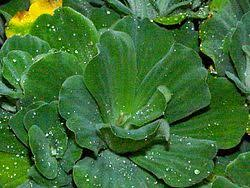
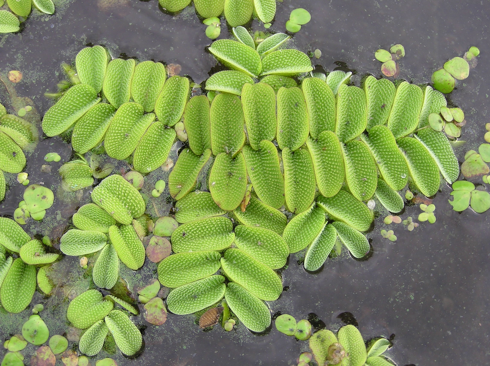
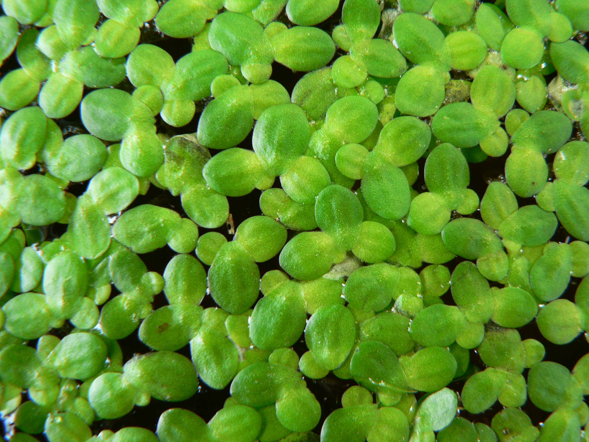
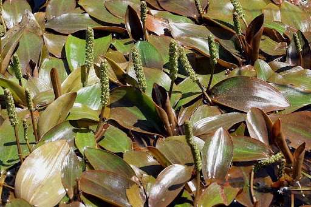
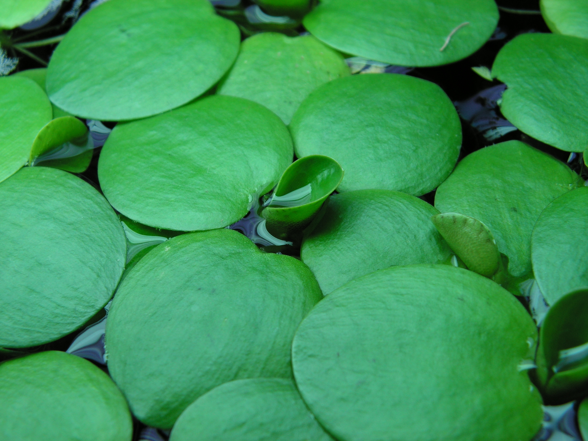
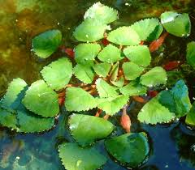
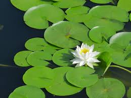
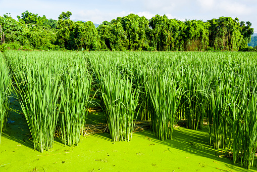
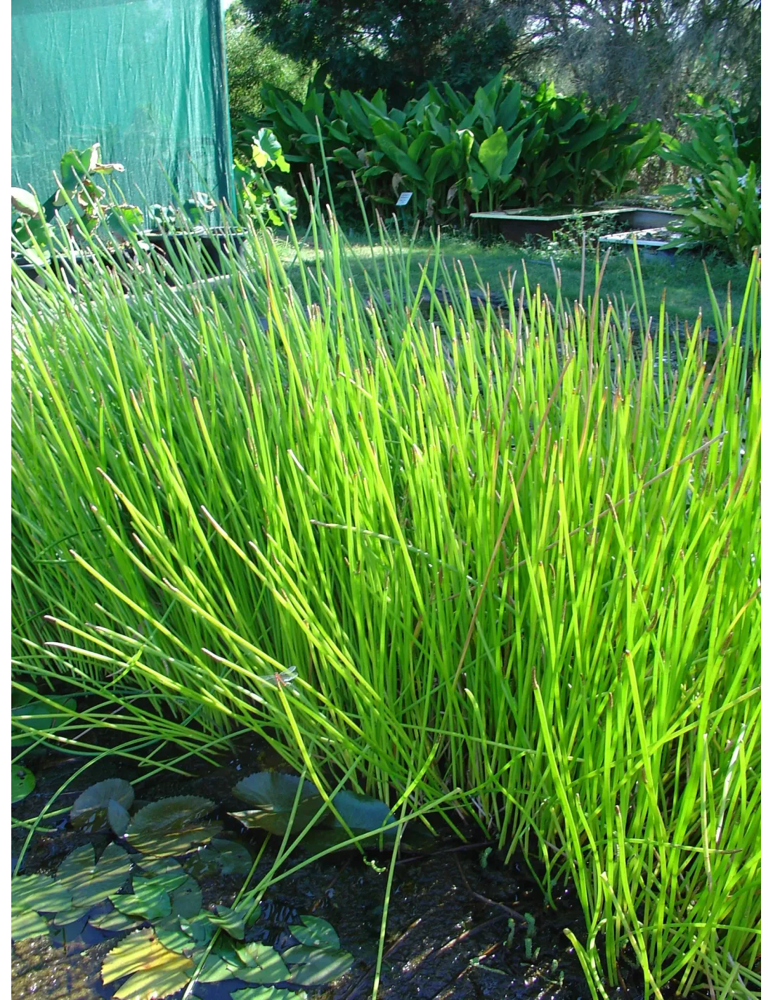

Nelumbo nucifera
El loto sagrado es una planta acuática famosa por la belleza de sus flores rosadas o blancas.
El loto sagrado es una planta acuática famosa por la belleza de sus flores rosadas o blancas.

Conocida como lechuga de agua, es una planta flotante perenne que forma rosetas densas.

Helecho acuático flotante de rápido crecimiento, nativo del sureste de Brasil.

La lenteja de agua es una planta diminuta que cubre superficies de agua dulce estancada.

Planta de hojas flotantes ovales, común en aguas ácidas y poco profundas.

El trébol de agua amazónico destaca por sus hojas circulares y raíces colgantes.

La castaña de agua tiene hojas en roseta flotante y produce un fruto comestible singular.

Un nenúfar pigmeo de hermosas flores blancas, ideal para estanques pequeños.

El arroz común, planta gramínea cultivada en campos inundados en todo el mundo.

Arroz silvestre de Manchuria, planta acuática de gran altura apreciada por su tallo.

Castaña de agua china, cultivada por sus tubérculos crujientes y dulces en Asia.